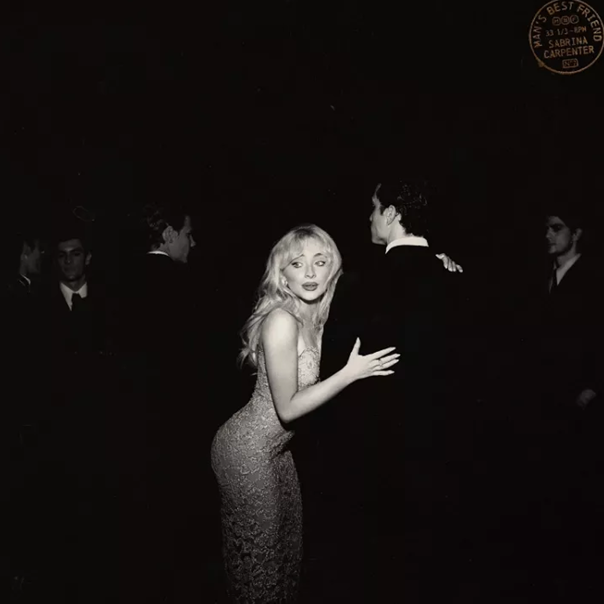

By Catlovers17
How Much Does Tiktok Really Impact an Artist's Success?
Thru the lens of 3 pop/indie artists that “made it”
Ever wonder why many music artists seemingly come outta nowhere? That one song that keeps playing in every Tiktok video, then when you get in your car you hear that same tune on the radio?
It's seems like every artist nowadays is building their audience on Tiktok? But how much does impact does Tiktok really have on a musician's popularity, can one viral TikTok video really change their life? How many musicians' gained a stable fanbase from Tiktok?
We wanted to explore this .... fdnskalfndklafnlkfdksafkldsankfdslaf